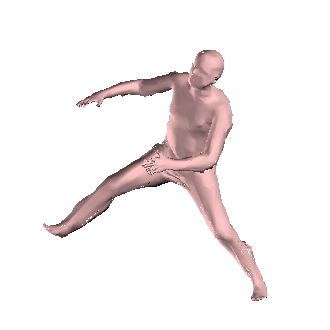
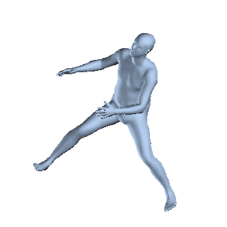
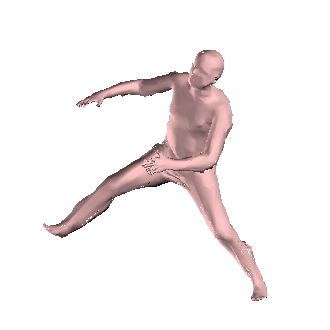
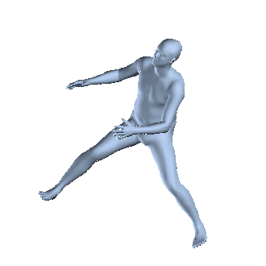
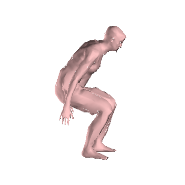
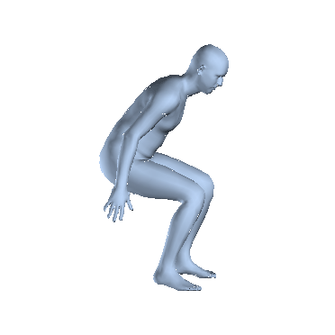
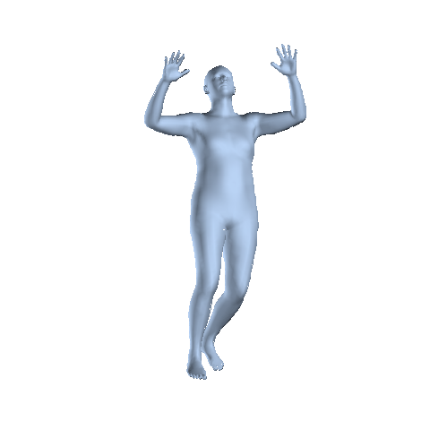
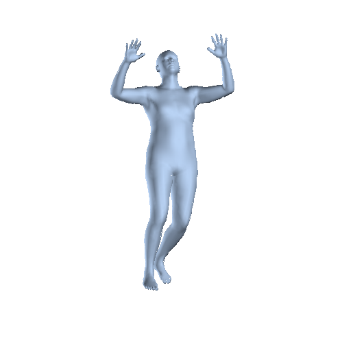

Convolutional Mesh Regression for Single-Image Human Shape Reconstruction
Nikos Kolotouros Georgios Pavlakos Kostas Daniilidis


 







Example reconstructions using our method. With light pink color we indicate the regressed non-parametric shape and with light blue the SMPL model regressed from the former shape.
Abstract
This paper addresses the problem of 3D human pose and shape estimation from a single image. Previous approaches consider a parametric model of the human body, SMPL, and attempt to regress the model parameters that give rise to a mesh consistent with image evidence. This parameter regression has been a very challenging task, with model-based approaches underperforming compared to nonparametric solutions in terms of pose estimation. In our work, we propose to relax this heavy reliance on the model's parameter space. We still retain the topology of the SMPL template mesh, but instead of predicting model parameters, we directly regress the 3D location of the mesh vertices. This is a heavy task for a typical network, but our key insight is that the regression becomes significantly easier using a Graph-CNN. This architecture allows us to explicitly encode the template mesh structure within the network and leverage the spatial locality the mesh has to offer. Image-based features are attached to the mesh vertices and the Graph-CNN is responsible to process them on the mesh structure, while the regression target for each vertex is its 3D location. Having recovered the complete 3D geometry of the mesh, if we still require a specific model parametrization, this can be reliably regressed from the vertices locations. We demonstrate the flexibility and the effectiveness of our proposed graph-based mesh regression by attaching different types of features on the mesh vertices. In all cases, we outperform the comparable baselines relying on model parameter regression, while we also achieve state-of-the-art results among model-based pose estimation approaches.
Publication
Nikos Kolotouros, Georgios Pavlakos, Kostas Daniilidis
Computer Vision and Pattern Recognition (CVPR), 2019 (Oral Presentation)
arxiv / project page / supplementary / code / bibtex
Citation
@inproceedings{kolotouros2019cmr,
Author = {Kolotouros, Nikos and Pavlakos, Georgios and Daniilidis, Kostas},
Title = {Convolutional Mesh Regression for Single-Image Human Shape Reconstruction},
Booktitle = {CVPR},
Year = {2019}}
Model architecture

Convolutional Mesh Regression (CMR). Given an input image, an image-based CNN encodes it in a low dimensional feature vector. This feature vector is embedded in the graph defined by the template human mesh by attaching it to the 3D coordinates of every vertex. We then process it through a series of Graph Convolutional layers and regress the 3D vertex coordinates of the deformed mesh.
SMPL regressor. Given a regressed 3D shape from the Graph CNN, we can use a Multi-Layer Perceptron (MLP) to regress the SMPL parameters and produce a shape that is consistent with the original non-parametric shape.
Results
Shape reconstruction on 3DPW. We present some additional results on videos from the recent 3DPW dataset. We note that our network was not trained with data from this dataset. Also we do not perform any postprocessing, e.g., temporal smoothing. For the videos that show multiple people, we reconstructed the shape of each person separately given the bounding boxes and then superimposed the shape reconstructions. We use pink color for the regressed non-parametric shape and blue color for the SMPL model regressed from the former shape.
Additional reconstructions on the LSP dataset. As before, with light pink color we indicate the regressed non-parametric shape and with light blue the SMPL model regressed from the former shape.


 

Acknowledgements
We gratefully appreciate support through the following grants: NSF-IIP-1439681 (I/UCRC), NSF-IIS-1703319, NSF MRI 1626008, ARL RCTA W911NF-10-2-0016, ONR N00014-17-1-2093, ARL DCIST CRA W911NF-17-2-0181, the DARPA-SRC C-BRIC, and by Honda Research Institute.